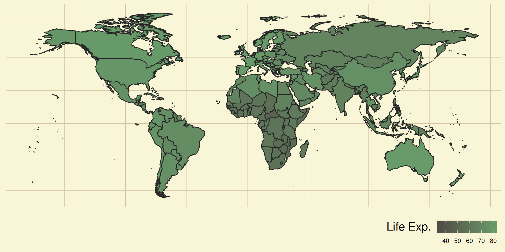

Mean or Arithmetic Mean\bar{x}, Geometric Mean\operatorname{GM}(x), Harmonic Mean\operatorname{HM}(x), Median\operatorname{median}(x) and Mode\operatorname{mode}(x) are some measures of central tendency in the sample.
labelfunction =function(val1){return(list(c("log of GDP per capita","Sanitation Access %","Life Expectancy" )))}ggplot(stack(d[2:4]), mapping =aes(y = values))+geom_boxplot(aes(fill=ind), alpha=0.8)+labs(x=NULL,y=NULL )+mytheme+scale_color_manual(values=c("#cc241d80","#45858880") )+facet_wrap(~ind, scales="free", labeller = labelfunction)+theme(axis.text.x=element_blank(),legend.position="none",strip.text.x =element_text(size =14))

Inferences
Scatter Plot
A Scatter plot is a type of Plot using Cartesian coordinate system to display values for two variables for a set of data. The data are displayed as a collection of points, each having one variable determining the abscissa and the other variable determining the ordinate. It helps us:
Covariance\operatorname{cov}(x, y) is a measure of the joint variability of two random variables x, y.
Correlationr_{x,y} is any relationship, causal or spurious, between two random variables x, y. Pearson’sr correlation coefficient is considered here.
partcor =pcor(d[, 2:4])$estimatepcortab =data.frame(row.names ="Variable",Variable =c("*Sanitation vs. ln(GDP)*","*Life Exp. vs. ln(GDP)*","*Life Exp. vs. Sanitation*" ),PCor =c( partcor[2, 1], partcor[3, 1], partcor[3, 2] ))kable(pcortab,col.names =c("Partial Correlation" ))
Partial Correlation
Sanitation vs. ln(GDP)
0.4826925
Life Exp. vs. ln(GDP)
0.3377892
Life Exp. vs. Sanitation
0.5075384
Inferences
Good linear correlation lets try to observe line of best fit.
Linear Regression
Simple Univariate Linear Regression is a method for estimating the relationship y_i=f(x_i) of a response variable y with a predictor variable x, as a line that closely fits the y vs. xscatter plot.
y_i = \hat{a} + \hat{b} x_i + e_i.
Where \hat{a} is the intercept, \hat{b} is the slope, and e_i is the ith residual error. We aim to minimize e_i for better fit.
Ordinary Least Squares
Ordinary Least squares method reduces e_i by minimizing error sum of squares\sum{e_i^2}.
olssmry =function( d, x_map, y_map,x_lab=waiver(), y_lab=waiver(),title=waiver()){ model =lm(formula=y_map~x_map) smry =summary(model, signif.stars=TRUE) smryvec =c(as.numeric(model$coefficients["(Intercept)"]),as.numeric(model$coefficients["x_map"]), smry$r.squared )return(smryvec)}olstab =t(data.frame(SvG =olssmry(d, d$lngdp, d$snt),LvG =olssmry(d, d$lngdp, d$lfx),LvS =olssmry(d, d$snt, d$lfx)))row.names(olstab) =c("*Sanitation vs. ln(GDP)*","*Life Exp. vs. ln(GDP)*","*Life Exp. vs. Sanitation*")kable( olstab,digit =5,col.names=c("$\\hat{a}$","$\\hat{b}$","$R^2$" ))
\hat{a}
\hat{b}
R^2
Sanitation vs. ln(GDP)
-70.79844
16.77006
0.65059
Life Exp. vs. ln(GDP)
30.24203
4.71876
0.59643
Life Exp. vs. Sanitation
53.22795
0.23907
0.66180
R^2: Coefficient of Determination
Least Absolute Deviation
Least absolute Deviation method reduces e_i by minimizing the sum of absolute deviations\sum{|e_i|}.
ladsmry =function( d, x_map, y_map,x_lab=waiver(), y_lab=waiver(),title=waiver()){ model =rq(formula=y_map~x_map) smry =summary(model) smryvec =c(as.numeric(model$coefficients[1]),as.numeric(model$coefficients[2]) )return(smryvec)}olstab =t(data.frame(SvG =ladsmry(d, d$lngdp, d$snt),LvG =ladsmry(d, d$lngdp, d$lfx),LvS =ladsmry(d, d$snt, d$lfx)))row.names(olstab) =c("*Sanitation vs. ln(GDP)*","*Life Exp. vs. ln(GDP)*","*Life Exp. vs. Sanitation*")kable( olstab,digit =5,col.names=c("$\\hat{a}$","$\\hat{b}$" ))
\hat{a}
\hat{b}
Sanitation vs. ln(GDP)
-71.23153
16.80472
Life Exp. vs. ln(GDP)
31.99047
4.61340
Life Exp. vs. Sanitation
53.73041
0.23963
Line fitting
Plotting the estimated Linear Model on the Scatter Plot.